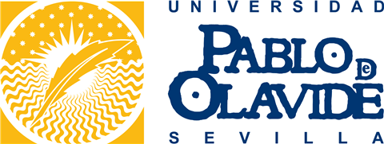
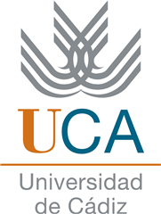
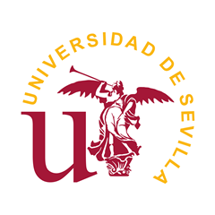
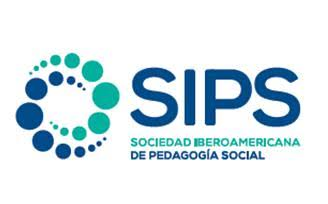
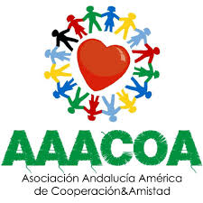

Constitución del grupo INNOVASOC
Se constituye en la Universidad Pablo de Olavide el Grupo de Investigación en Innovación Socioeducativa, reconocido en el PAIDI con el código SEJ696.
Grupo PAIDI SEJ696 · Universidad Pablo de Olavide
Grupo de Investigación en Innovación Socioeducativa
Investigamos los procesos educativos y sociales para contribuir a transformarlos desde la innovación, la equidad y la participación.
En esta sección compartimos la actualidad del Grupo de Investigación INNOVASOC (SEJ696): nuevos proyectos, publicaciones, participación en congresos, eventos y colaboraciones. Un espacio para dar a conocer nuestro trabajo y mantenernos en contacto con la comunidad académica y la sociedad.
Se constituye en la Universidad Pablo de Olavide el Grupo de Investigación en Innovación Socioeducativa, reconocido en el PAIDI con el código SEJ696.
Aquí aparecerán las próximas noticias del grupo.
El Grupo de Investigación en Innovación Socioeducativa INNOVASOC se constituyó el 3 de febrero de 2024 en la Universidad Pablo de Olavide (Sevilla). Está adscrito al Departamento de Educación y Psicología Social y su responsable es el profesor Fernando López Noguero.
Es un grupo reconocido dentro del Plan Andaluz de Investigación, Desarrollo e Innovación (PAIDI) de la Junta de Andalucía, con el código SEJ696, en el área de Ciencias Sociales, Económicas y Jurídicas.
La actividad del grupo se organiza en varias líneas de investigación y transferencia. Comparten un mismo propósito: comprender los procesos educativos y sociales y contribuir a transformarlos desde la innovación, la equidad y la participación. Las líneas se complementan entre sí, lo que favorece un enfoque interdisciplinar y la colaboración con instituciones, entidades sociales y otros grupos de investigación.
Estudiamos y diseñamos propuestas educativas que promueven la conciencia ecológica, la sostenibilidad y una relación responsable con el entorno. Prestamos especial atención a la formación de una ciudadanía comprometida con los retos ambientales y con los Objetivos de Desarrollo Sostenible.
Investigamos estrategias de promoción de la salud y de prevención desde una perspectiva educativa. El objetivo es fomentar estilos de vida saludables, el autocuidado y el bienestar integral de las personas en las distintas etapas de la vida.
Analizamos, diseñamos y evaluamos experiencias de innovación docente y el uso pedagógico de las tecnologías digitales. Incluimos los entornos virtuales de aprendizaje, la competencia digital y las nuevas formas de enseñar y aprender en contextos formales y no formales.
Abordamos el diseño, la aplicación y la evaluación de programas de intervención dirigidos a personas, grupos y comunidades en situación de vulnerabilidad. Buscamos favorecer su desarrollo personal y social, su autonomía y su plena participación en la sociedad.
Estudiamos el ocio como un derecho y como un espacio educativo de primer orden. Analizamos su contribución al desarrollo personal, a la socialización, al bienestar y a la calidad de vida de la infancia, la juventud, las personas adultas y las personas mayores.
Investigamos los procesos y las prácticas que garantizan una educación de calidad para todas las personas, sin exclusiones. Esta línea abarca:
Analizamos e impulsamos procesos de dinamización social y cultural que fortalecen el tejido comunitario. Promovemos la implicación activa de la ciudadanía en la mejora de su entorno y en la construcción de comunidades más cohesionadas.
Contribuimos al desarrollo teórico y práctico de la pedagogía social como disciplina y de la educación social como profesión. Atendemos a sus ámbitos de intervención, a la formación de sus profesionales y a la mejora de sus prácticas.
Investigamos y aplicamos enfoques metodológicos que sitúan a las personas como protagonistas de los procesos educativos, sociales e investigadores. Entre ellos se encuentran la investigación-acción participativa, el aprendizaje-servicio y otras estrategias de construcción colectiva del conocimiento.
Estudiamos la educación para una ciudadanía activa, crítica y democrática. Analizamos los procesos de participación social y el papel de la educación en la construcción de sociedades más justas.
Investigamos el desarrollo de las competencias emocionales y su relación con el bienestar, la convivencia, el aprendizaje y la prevención de conductas de riesgo. Abordamos tanto el ámbito escolar como el familiar y el comunitario.
Abordamos la educación como herramienta para la transformación social, la justicia global, la solidaridad y la cooperación. Promovemos procesos que refuercen la cohesión social y reduzcan las desigualdades.
INNOVASOC reúne a investigadoras e investigadores de varias universidades andaluzas y españolas. Les une el interés por la innovación socioeducativa y por una educación al servicio de la inclusión, la participación y la transformación social. Proceden de distintas áreas de conocimiento y trayectorias profesionales, lo que hace del equipo un espacio interdisciplinar e interuniversitario. Esta composición nos permite abordar los fenómenos educativos y sociales desde perspectivas complementarias y tender puentes entre la universidad, los centros educativos y las entidades sociales.
Responsable del grupo
Profesor Titular de Universidad (Universidad Pablo de Olavide)
Profesor Titular de Universidad (Universidad Pablo de Olavide)
El Grupo de Investigación INNOVASOC (PAIDI SEJ696) entiende la investigación como una tarea compartida. Por eso, uno de sus ejes de trabajo es la creación y el fortalecimiento de redes de colaboración con otros grupos de investigación e innovación, universidades, centros de investigación e instituciones, en el ámbito nacional e internacional.
Estas alianzas nos permiten intercambiar conocimientos, metodologías y experiencias, desarrollar proyectos conjuntos y abordar los retos socioeducativos desde enfoques interdisciplinares. Además, multiplican el alcance y el impacto de nuestro trabajo. Fruto de esta colaboración surgen publicaciones compartidas, la organización de encuentros científicos, estancias de investigación y la participación en redes temáticas y asociaciones profesionales.
Junto al ámbito académico, el grupo mantiene un estrecho vínculo con centros educativos, administraciones públicas y entidades del tercer sector. Esta conexión con la práctica es esencial para que la investigación responda a necesidades reales y para que sus resultados contribuyan a la mejora de la educación y de la intervención social.
En esta sección recogemos las principales redes, grupos, universidades e instituciones con las que colaboramos.





La actividad investigadora del Grupo INNOVASOC (PAIDI SEJ696) se concreta en proyectos que desarrollan sus líneas de investigación y responden a los desafíos educativos y sociales actuales. En esta sección presentamos los proyectos en los que participa el grupo, tanto los que están en marcha como los ya finalizados.
Nuestros proyectos abarcan convocatorias competitivas de ámbito autonómico, nacional e internacional, proyectos de innovación docente y contratos y convenios de transferencia con administraciones públicas, centros educativos y entidades sociales. En todos ellos buscamos combinar el rigor científico con la utilidad social: generar conocimiento que ayude a comprender mejor la realidad socioeducativa y a diseñar respuestas más justas, inclusivas e innovadoras.
Muchos de estos proyectos se llevan a cabo en colaboración con otros grupos, universidades e instituciones. Además, dan lugar a publicaciones, materiales educativos, encuentros científicos y actividades de transferencia.
La producción científica del Grupo INNOVASOC (PAIDI SEJ696) es el resultado de la labor investigadora de sus miembros y de su colaboración con otros grupos, universidades e instituciones. Con estas publicaciones queremos aportar conocimiento riguroso y actualizado al ámbito de la educación y la intervención socioeducativa, y acercarlo tanto a la comunidad científica como a los profesionales y a la sociedad en general.
En esta sección recogemos los trabajos publicados por los miembros del grupo, organizados en tres apartados: libros, artículos en revistas científicas y capítulos de libro. Dentro de cada apartado, las publicaciones aparecen ordenadas de la más reciente a la más antigua. Siempre que es posible, incluimos el enlace al documento o a su versión en acceso abierto.
En este apartado se presentan las monografías y obras colectivas que los miembros del grupo han escrito, coordinado o editado. Estas obras ofrecen una visión amplia y profunda de temas centrales de nuestras líneas de investigación y reúnen, en muchos casos, la colaboración de especialistas de distintas universidades e instituciones.
Este apartado reúne los artículos publicados en revistas científicas nacionales e internacionales, muchas de ellas indexadas en bases de datos de referencia. Los artículos difunden los resultados de nuestras investigaciones y contribuyen al debate académico en el ámbito socioeducativo.
Aquí se recogen las contribuciones de los miembros del grupo a obras colectivas publicadas por editoriales académicas. Reflejan la participación del grupo en proyectos editoriales compartidos y su diálogo con otros investigadores e investigadoras.
El Grupo INNOVASOC (PAIDI SEJ696) promueve la organización de encuentros científicos y la participación en ellos. Son espacios fundamentales para el intercambio de conocimiento, el debate académico y la creación de redes de colaboración. Creemos que la investigación cobra pleno sentido cuando se comparte, se contrasta y se pone en diálogo con otros investigadores e investigadoras, con los profesionales de la educación y la intervención social y con la sociedad en general.
En esta sección informamos de los congresos, jornadas, seminarios, simposios y talleres que organiza el grupo o en los que colabora, tanto los próximos como los ya celebrados. También recogemos la participación de nuestros miembros en eventos nacionales e internacionales a través de ponencias, comunicaciones, conferencias, mesas redondas y la coordinación de simposios.
Con estas actividades queremos difundir los resultados de nuestras investigaciones, impulsar el debate sobre los retos actuales de la innovación socioeducativa y abrir la universidad a la participación de estudiantes, profesionales y entidades sociales.
Os invitamos a consultar esta sección para conocer nuestras próximas convocatorias y participar en ellas.
Pendiente de completar.
Pendiente de completar.
@GI_INNOVASOC
Departamento de Educación y Psicología Social
Universidad Pablo de Olavide, Sevilla